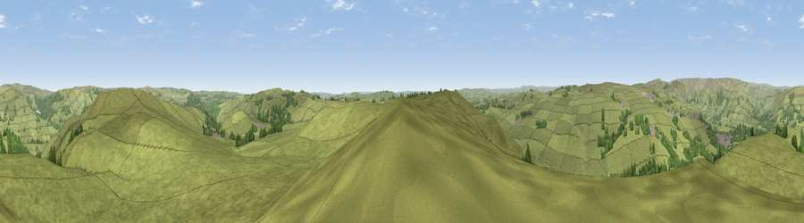

Viewpoint near Bradwell
#16024 in England · top 24% of its area beats it · near BradwellWhere it is
The exact computed spot (SK 18275 80125). Click the marker for map links.
The view, rendered

A 360° render of this exact spot computed from the terrain model, tree cover and land cover — summer colours, afternoon light, calibrated against photographs of famous viewpoints. Real trees, hedges and buildings will differ in detail.
The panorama
Grey silhouette: terrain skyline in each direction (720 bearings, Earth curvature and refraction included). Dashed green: skyline with trees (+15 m) and buildings (+8 m) as obstacles. Blue strip: how far the ground is visible on each bearing.
Where the view opens
Wedge length = distance to the farthest visible ground on that bearing (vegetation-aware). Rings at 10, 25 and 50 km.
What fills the view
90% grassland · 9% woodland ·
Angular shares of the visible panorama (visual magnitude), not map area. Landscape diversity 0.15 (0–1 Shannon).
Key numbers
More beautiful places nearby
The staircase of upgrades: each row has a higher view potential than everything closer. Driving times are estimates from straight-line distance, calibrated against real road routing — check an actual route before setting out.
| Place | Direction | Drive | Score |
|---|---|---|---|
| Durham Edge | SSW · 1 km | ~2 min | 57.2 |
| Shatton Moor | ENE · 1 km | ~4 min | 58.8 |
| Viewpoint near Eyam | SE · 4 km | ~9 min | 61.6 |
| Sir William Hill | SE · 4 km | ~9 min | 68.3 |
| Mam Tor | WNW · 7 km | ~14 min | 68.5 |
| High Neb | NE · 7 km | ~14 min | 69.5 |
| High Rake | SSE · 7 km | ~15 min | 71.1 |
| Lord's Seat | WNW · 8 km | ~16 min | 73.1 |
53.31774, -1.72714 · source: screening · position refined by local search. Computed location — check access rights before visiting.